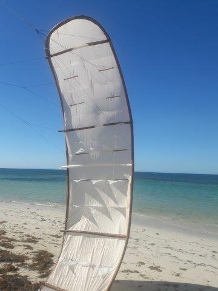
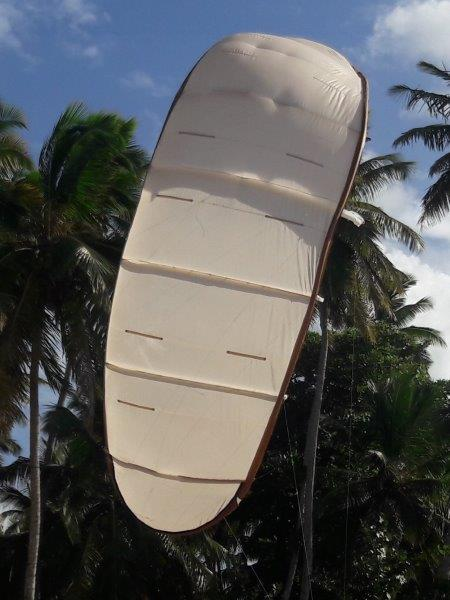
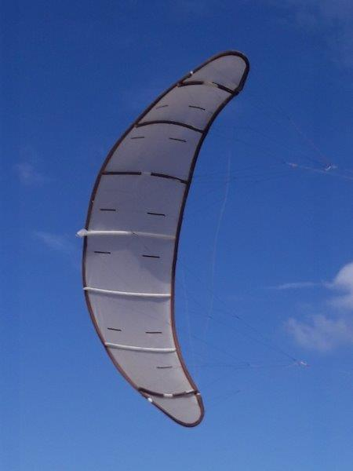
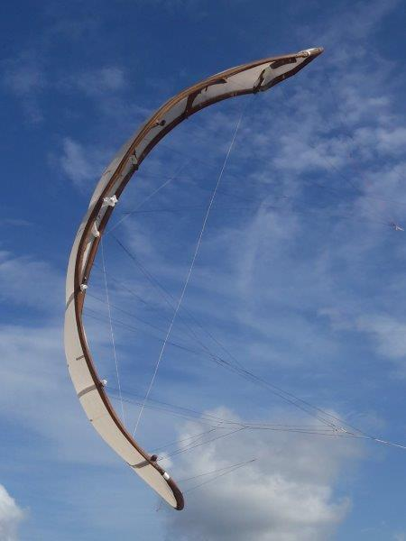
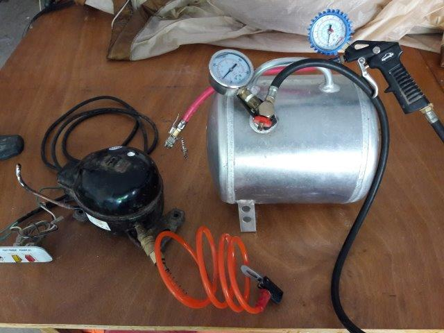

Path to this proto.
The prototype you see is the 4th large one I fly. Area is 7.5sqm and Aspect Ratio is 4.2 (we are far from the race ram air kites with their AR 7).
It has been built 2 years ago but I didn't work on it, being busy on personal matters. It arrived from China without hoses inside and with many things totally different to what I had asked. Furthermore I had to develop a way to reliably end the tubes and make a lot of modifications to get it flying correctly.
I don't have a design software right now able to help me, so the bridles were settled manually on the beach. It is impossible to make it clean that way.
I put 3 to 4 bars (40-60 PSI) inside the frame for now. The goal is to put 5 to 8 (70-110 PSI). I didn't take the risk to explode a strut while testing on the beach for now to avoid losing time. I'll do it gradually.
So, although this prototype is far from being clean and fully developed, it has already proven to fly very high in the wind window, to be powerful, very resistant to gusts and turbulence, very light (as a cell kite), very easy to rear launch and fly in light wind...
The following pictures were taken at an early stage of development of this prototype. Just to show the general shape, bridles and details.
The kite is asymmetrical in the placement of its struts and bridles, which allows to quickly see what is the best option, right or left. There are numerous bridles.


I then decided to remove all the bridles connected to the canopy. I added 2 struts for a total of 7. I put bridles only at the intersections and on the struts to make the bridles' net as simple as possible. Now the weight is 2.2kg but a production kite could weight 2kg, maybe less.


Equipment for inflating it.


I use a small fridge compressor to fill a very light aluminium tank for truck horn (till 30 bars) then I go to the beach and inflate the kite with zero effort and in seconds. When I go back home, I fill the tank again.


3 other ways available in any car or bike shop : manual tyre pump, 12 volt tyre pump for cars, tyre pump with own lithium battery
This invention has not been protected (except from predators by being published) and is offered in an open-source spirit. Brands are welcome to use it.